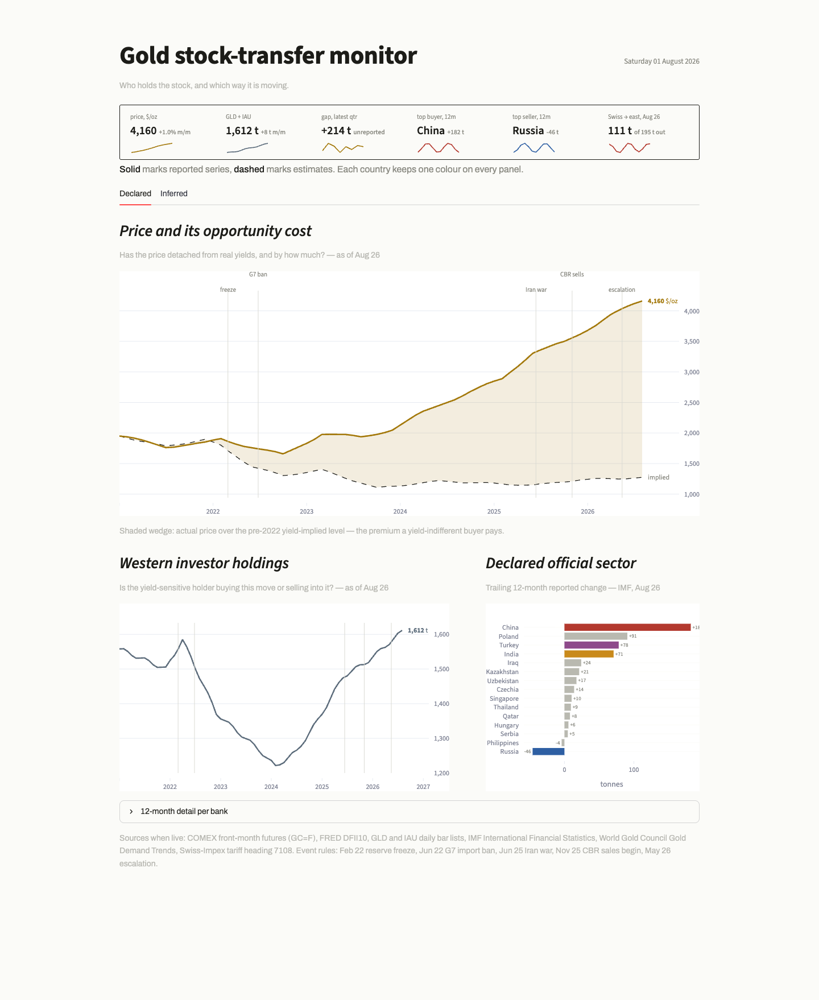
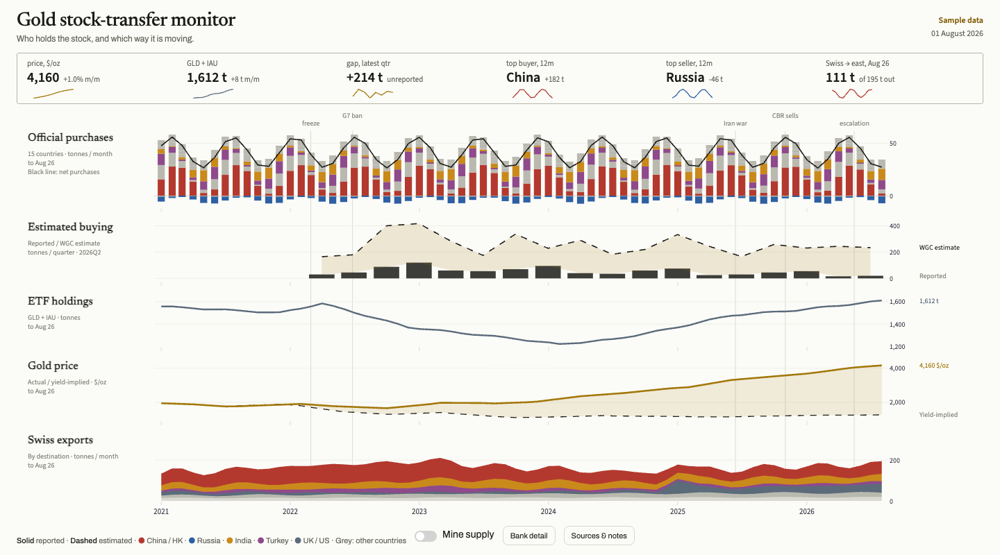

Gold
Session 3 · Part A
The downloadable dashboard and the screenshots below use sample data for practice.
This walkthrough follows the decisions behind a gold dashboard: what questions it should answer, which charts to use, how to arrange them and where interaction helps. In section 2, we look at how those decisions become a working Streamlit app. You will then adapt the dashboard in a direction of your own choosing.
1 · Design decisions

Decide what the dashboard is for
A price chart shows whether gold became more or less expensive. It leaves other questions open: who is buying, who is selling, and where is gold moving? The dashboard brings several views together so a reader can investigate those questions.
For example, someone might see a rising price and then look at the holdings chart to see whether investment funds also hold more gold. The two charts give context to each other. They do not, by themselves, explain what caused the price to rise.
The starting point is therefore a set of questions:
- What has happened to the price?
- How much gold do the investment funds hold?
- Which countries have been buying or selling?
- How do reported purchases compare with an estimate?
- Where is gold being sent?
These questions give each chart a job. They also help decide what deserves space on the opening screen.
Match the chart to the question
The dashboard uses different visual forms because the comparisons differ.
| What the reader wants to see | Chart in the dashboard | Why it suits the question |
|---|---|---|
| Price changes over time | A line chart | The path makes rises, falls and turning points visible. |
| Changes in fund holdings | A line chart | The reader can follow the amount of gold held over time. |
| Purchases and sales by country | Horizontal bars | Length and ordering make countries easy to compare. |
| Reported purchases beside an estimate | Bars and a dashed line | The two kinds of figures remain distinguishable. |
| Exports to different destinations | Stacked areas | The chart shows both the total and how destinations contribute to it. |
The country bars combine the most recent 12 months into one number per country. That makes a useful ranking, but hides when the buying or selling happened. A monthly chart answers a different question. A dashboard can offer both: a ranking for comparison and a more detailed view for a country of interest.
Consider: if you wanted to find a sudden change in one country’s activity, which view would you use? If you wanted to compare all countries quickly, which would you use?
Give the page a clear order
The opening screen has three levels. The summary strip gives a quick reading of selected numbers. The large price chart gives the main subject the most space. The smaller charts below provide related information.
This is a choice about emphasis. Making every chart equally large would give them equal prominence, but it would also make the reader decide where to begin. Putting related charts beside one another encourages comparison.
The two tabs, Declared and Inferred, group related charts. The first contains price, fund holdings and country comparisons; the second contains the estimated-demand comparison and exports. Tabs keep the page shorter, although the reader must switch between them to see everything.
A different layout makes a different comparison easier
An earlier revision placed five charts in a single column:

With this arrangement, the same month is directly above or below itself in every chart. It is easier to see whether changes happened around the same time. The cost is that each chart gets less height.
Neither arrangement serves every purpose. The larger price chart helps someone concentrate on price. The stacked layout helps someone compare timing across several measures. Choose the layout for the comparison you want to support.
Make the comparisons clear
The app reuses colours for the same countries. This helps the reader recognise a country when moving from one chart to another. Solid and dashed lines separate reported and estimated figures, so colour is not the only clue.
Labels also need to say what a number means. Gold held on a particular date is an amount owned. Gold bought during a month is activity over a period. Both can be measured in tonnes, but they answer different questions. A title such as “Monthly purchases and sales” makes that distinction clearer.
Dates matter too. A latest-price number and a quarterly estimate may refer to different periods. Put that information near the chart so the reader can see what is being compared. If a value is missing, leave it missing: showing zero would suggest that nothing was held or bought.
The supplied values are practice data. When adapting the app, keep that clear. If you use real data, identify its source and the dates it describes. A polished chart should help someone understand the evidence behind it.
Use interaction to answer a useful question
The original app already lets the reader hover for values, open 12-month detail per bank, and switch optional comparison lines on or off. These controls provide more detail without putting everything on screen at once.
A country selector would offer another useful route: first compare countries in the ranking, then choose one and inspect its monthly activity. Section 2 shows how to add that view using data already supplied with the app.
As you look through the dashboard, choose a question you would like your own version to make easier to answer. That will give your adaptation a purpose.
Continue to section 2 — From sources to screen.
2 · From sources to screen
Section 1 explained the questions and design choices. Here we follow how the app reads its data, draws its charts and arranges them on the page. Then we add a country selector that lets a reader explore one country’s activity.
The examples below refer to the downloadable Streamlit app. Work in the files on your computer as you did in Session 2.
Open the working dashboard
Download the Streamlit dashboard ZIP and extract it. Open the extracted gold_dashboard folder in your code editor.
Use your Python setup from Streamlit 1. Open a terminal in the gold_dashboard folder and run:
python -m pip install -r requirements.txt
python -m streamlit run app.pyThe dashboard opens in your browser. If it does not open automatically, use the Local URL printed in the terminal. The sample data are included in the ZIP.
Explore both tabs. Hover over the charts, open 12-month detail per bank, and try show mine replenishment in the Inferred tab. Think about what each interaction lets you see that the opening screen does not.
Follow the data into the app
The main work happens in app.py. It reads tables from data/, makes charts from those tables, and places the charts in the dashboard. design.py holds shared choices such as country colours.
Three Python packages do most of the work: pandas reads and organises the tables, Plotly draws the charts, and Streamlit puts the charts and controls on the page.
The data are divided into five CSV files. A CSV is a table saved as a text file; you can also open it in a spreadsheet.
| File | What it contains |
|---|---|
price.csv |
Dates, gold prices and values used for the comparison line |
etf.csv |
Dates and the amount of gold held by the two investment funds |
declared.csv |
Monthly purchases and sales for each country |
gap.csv |
Quarterly reported purchases and estimated purchases |
swiss.csv |
Monthly exports to different destinations |
Open declared.csv. Its three columns are date, country and net_purchases_t. Each row describes one country in one month. The last column is measured in tonnes: a positive number means net buying and a negative number means net selling.
In app.py, this line loads that table:
declared = load("declared")The app’s load() function reads the matching CSV. After that line runs, declared is the table the charts can use. The other CSVs are loaded in the same way.
Turn a table into a comparison
The country ranking uses a summary of declared.csv. The app keeps the most recent 12 months, adds the monthly amounts for each country, and orders the country totals. It then draws one horizontal bar per country.
This changes what the reader can find out. The original table contains the month-by-month detail. The ranking makes it easier to compare countries over the whole period. The 12-month detail per bank display lets the reader look behind that summary.
The same pattern appears elsewhere: choose the relevant rows, decide whether to show individual values or a summary, then choose the chart. Before changing a chart, check which of those decisions you want to change.
For example, replacing a ranking with monthly bars would make timing easier to see, but would make the overall country comparison harder. Keeping the ranking and adding a country selector gives the reader both routes.
Put the charts together
Streamlit places content on the page as it runs through app.py. The supplied app creates the two tabs with:
tabD, tabI = st.tabs(["Declared", "Inferred"])Charts inside with tabD: appear in Declared. Charts inside with tabI: appear in Inferred. The indented lines under each statement belong to that tab.
Within Declared, the price chart appears first. The next two charts are placed beside each other using:
left, right = st.columns([3, 2], gap="large")The numbers give the left chart three shares of the available width and the right chart two. The sections beginning with left: and with right: put content in those columns. This is how the layout decision from section 1 becomes part of the app.
When adapting the dashboard, you can change this arrangement to suit your questions: give an important chart more space, put related views together, or move detailed material into a separate tab.
Add a way to explore one country
The existing ranking compares all countries. Let’s add a view where the reader chooses one country and sees its monthly purchases and sales.
Add the following block at the end of app.py. It uses the table and the Declared tab that the app has already created.
with tabD:
st.subheader("Explore one country")
country = st.selectbox(
"Choose a country", sorted(declared["country"].unique())
)
country_data = declared[declared["country"] == country]
fig = px.bar(
country_data, x="date", y="net_purchases_t",
labels={"date": "Month", "net_purchases_t": "Tonnes"},
title=f"{country}: monthly purchases and sales (sample data)",
)
st.plotly_chart(fig, use_container_width=True)The block does four things:
- Builds a dropdown list from the country names in the table.
- Keeps the rows for the country the reader chooses.
- Draws a bar for each month’s value, with dates along the bottom and tonnes up the side.
- Displays the chart in the Declared tab.
Save the file and rerun the app. Scroll down in Declared to find the new view. Try China, then Russia. Check that the title and bars change with your selection. Bars above zero show net buying; bars below zero show net selling in these sample data.
Now compare this view with the country ranking. The ranking answers “who bought or sold more over the last year?” The new view answers “when did this country buy or sell?” It displays all the months in the supplied table, so its time span is longer than the ranking’s. That difference should be clear to the reader.
This is one possible extension. You could instead add a date control, compare two countries, reorganise the views, or use another dataset. Choose something that helps answer the question you identified in section 1.
Final exercise · Adapt and host your dashboard
You are encouraged to adapt the dashboard however you like. You could focus on a different question, change how comparisons work, add a view or use another dataset. Keep sample data labelled as sample data.
When you are happy with your version, put it online using Streamlit Community Cloud, as you did in Session 2:
- Upload the contents of your
gold_dashboardfolder to a public GitHub repository. Putapp.py,design.py,requirements.txtand thedata/folder at the top of the repository. - Open Streamlit Community Cloud, choose Create app, select your repository and branch, and choose
app.pyas the file to run. Deploy the app. - Open its link in a private browser window to check that someone else can use it without signing in.
If you need a reminder, use the Streamlit deployment guide.
Submit the link to your hosted dashboard as a plain text file through Canvas. The link will look like https://your-app-name.streamlit.app/.